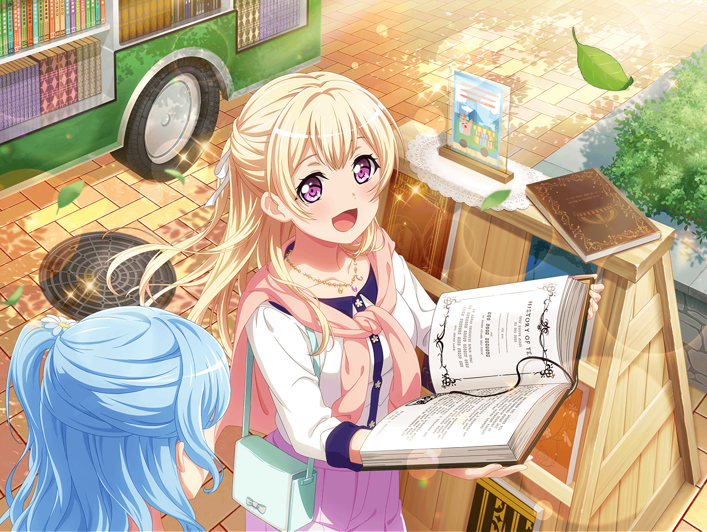

レッスンスタジオ
彩
ふんふんふんふんふ～ん♪
千聖
あら、彩ちゃん。なんだか嬉しそうね
彩
あ、千聖ちゃん！ えへへ、見て見て！
千聖
見てってスマホ？ これ、彩ちゃんのSNSアカウントよね
彩
うん、この間カフェで撮った写真を載せたら、
たくさんコメントが来たんだ〜！
千聖
ふふ、それで嬉しそうだったのね
日菜
なになに？ 二人でどこか行ったの？
彩
うん！ 新しくできたカフェに行ったんだ！
千聖
二人でというか、いろいろあってたまたま一緒になったのよ
麻弥
いろいろですか？
千聖
ええ、話せば長くなるのだけど……
日菜
へぇ、最近そんなカフェができたんだ〜！
千聖
ええ、評判通りの素敵なカフェだったわ。
確か、写真が……ほら、お店の中はこんな感じよ
日菜
わあ！ すごーい、窓が猫の形になってるー！
イヴ
シュガーポットは小鳥の形をしているんですね！
とっても可愛いです！
麻弥
店内装飾を動物モチーフでまとめている感じですか。
うんうん、これは作り手のこだわりを感じますね
千聖
ラテアートの写真は……これね。
カップから飛び出そうとしているみたいでしょ？
日菜
わ、すっごくもこもこしてる！
これって何？ 犬？
彩
確か、ゴールデンレトリバーだったよね、
千聖ちゃんがリクエストしたのって
千聖
ええ、思っていたよりも可愛い仕上がりで嬉しかったわ
イヴ
こんなことができるなんてすごいですっ！
サムライのラテアートもお願いできるでしょうか？
麻弥
サ、サムライですか……
動物系は得意そうなお店ですけど、サムライはどうでしょう？
日菜
じゃあ、リスのサムライならいいんじゃない？
麻弥
ちょっと意味がわかりませんけど……
彩
それなら、私はマイクを持ってる猫がいいなぁ〜
日菜
じゃあ、あたしはギターを持ったクマとかかな？
麻弥
ドラムはさすがに無理ですよねー……
千聖
どれもラテアートで作るには難しいんじゃないかしら？
日菜
それにしても、意外だよねー。
千聖ちゃんが電車を乗り間違えるなんてさ
千聖
電車は苦手なのよ……
でも、悪いことばかりじゃなかったわ
日菜
手作り雑貨のイベントかぁ。
それって、洋服とかアクセサリーが売ってるの？
彩
うん！ 他にもいろんなお店が
いっぱいあってすっごく楽しそうだったよ！
千聖
和風の小物を売ってるお店もあったわね。
根付やかんざしも手作りで、かなり凝っていて……
イヴちゃんにも見せてあげたかったわ
イヴ
日本のココロを感じられそうなお店ですね！
行ってみたかったです！
千聖
麻弥ちゃんに似合いそうなメガネが売っているお店もあったわよ
麻弥
メガネのお店まであるんですか！？
本当にいろいろなものがあるイベントなんですね
千聖
ええ、会場を見て回るだけでもとても楽しかったわ
千聖
そういえば、みんなにお土産があるの
彩
キーホルダー？
わ、可愛い！ お花の形してる！
麻弥
それぞれ色が違うんですね。
あれ？ もしかしてこの色って……？
千聖
ええ、みんなのメンバーカラーよ。
彩ちゃんがピンクで私が黄色……
千聖
メンバーカラーと同じ色のキーホルダーだったから、
お土産によさそうと思ったの
イヴ
とってもステキなお土産です！
ありがとうございます！
日菜
うん！ いいね、このキーホルダー！
るんっ♪ ってきちゃった！
麻弥
それにしても、楽しそうですね。
ジブンも行ってみたいです
千聖
ええ、今度はみんなで行きましょう。
きっと気に入るものが見つかると思うわ